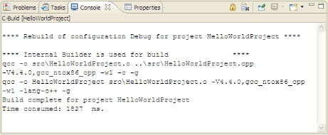

The Console view shows you the output of the execution of your program and lets you supply input to your program:

The Console view shows program output execution.
The console shows three different kinds of text, each in a different default color:
- standard output (black)
- standard error (red)
- standard input (green)
You can choose different colors for these kinds of text on the preferences pages.
To access the Console view's customization dialog:
- From the menu, select .
- In the left pane, select .
You can have more than one Console view, which is useful if you're working on more than one application at once:
- To create a new console, use the Open Console icon.

- To show a different console, use the Display Selected Console icon.

- To reduce switching between consoles, use the Pin Console icon.

Remember that you can copy data from the console and paste it elsewhere.